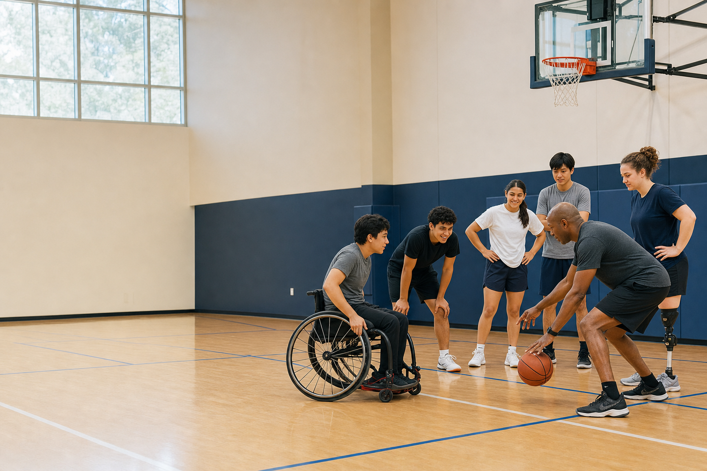

Play · Planned
AccessCourt Clinics
The planned supervised adaptive basketball sessions will be designed around choice, clear instructions, seated and standing options, sensory breaks, and no elimination or ranking.
Atrak Impact · Inclusive sports technology
AccessCourt combines supervised adaptive basketball with accessible, student-built tools. We start with a working coach and adapt other Atrak projects only after partner, safety, and privacy review.

AccessCourt is being developed to help athletes with disabilities and different cognitive, sensory, and physical access needs participate in basketball through planned supervised community programs, simpler coaching tools, and meaningful ways for students to contribute. The work is educational and recreational—not therapy, diagnosis, or medical care.
Start with a real barrier. Adapt only what helps. Return the learning to the community.
Adaptive basketball stays at the center. Technology supports the experience; it never replaces adult coaches, partner staff, or participant choice.
Play · Planned
The planned supervised adaptive basketball sessions will be designed around choice, clear instructions, seated and standing options, sensory breaks, and no elimination or ranking.
Learn · Live tool
Use simpler visual and spoken coaching tools—from the working Visual Drill Coach to future partner-reviewed adaptations of Atrak's basketball technology.
Try the working MVPBuild · Planned
The planned studio will train student athletes and engineers to solve partner-defined accessibility problems, test alongside adults and host staff, and document improvements without accessing participant records.
Existing technology is a starting point—not permission to deploy it.
Let educators, athletes, families, and host staff define the barrier.
Choose a relevant Atrak pattern—or decide that technology is not the answer.
Build the smallest free, accessible version and complete adult safety and privacy review.
Test only in a supervised pilot, then share aggregate learning back with the community.
The Atrak → AccessCourt bridge
AccessCourt does not present every Atrak project as ready for participants. Each connection has a clear maturity label and must pass partner, accessibility, safety, and privacy review before entering a program.
Live Available now.
Adapt next Planned and under review.
Research Not approved for participant use.
Working no-login coaching tool with large visuals, speech, adjustable complexity, and multilingual guidance; no participant profiles.
Try Visual Drill CoachLive community sites showing Atrak's basketball-operations experience—not AccessCourt hosts, sponsors, or partners unless separately confirmed.
Voice-first patterns to evaluate for cues, contrast, focus, and navigation; no GuidePup camera features or user data move into AccessCourt.
View GuidePup on AtrakSimpler step-by-step plays with icons, plain language, slower motion, and printable options; no ability scoring or athlete rankings.
Open AI Hoops BoardOptional, free portfolios for student coaches and builders to document their own work; no participant information.
View LifePage on AtrakInitial pilots remain camera-off; future video work requires separate consent and forbids face recognition, ranking, or commercial model training.
View Hoops Clips on AtrakAdult-planning research for checklists and drill variations only; no participant records, automated safety decisions, or replacement of host review.
View Atrak Agent on AtrakA clinic does not run unless adult supervision, partner staff, insurance confirmation, consent, emergency planning, and required training are in place.
Screened and trained adults hold legal and safety responsibility. Student volunteers never supervise participants alone.
The first pilots use a no-participant-camera rule. No face recognition, participant ranking, or commercial model training is permitted.
We do not request diagnoses, IEP files, face data, or participant accounts. AccessCourt information does not become an Atrak product dataset.
We measure participation, clarity, return interest, accommodations, and safety—not treatment outcomes or disability change.
Operational policies are being prepared for adult review and must be approved by the legal operating partner, insurer, and host organization before the first clinic. AccessCourt community tools remain free and cannot require a paid Atrak account.
AccessCourt builds the program with—not around—the host organization.
Adult educators, adaptive-PE staff, program leaders, parents or guardians, coaches, and accessibility reviewers can help us evaluate the next adaptation.
Please do not submit medical, diagnostic, student-record, incident, emergency, or safeguarding information through this form. During pilot setup, the student project team monitors this inbox; an adult legal operator has not yet been appointed.